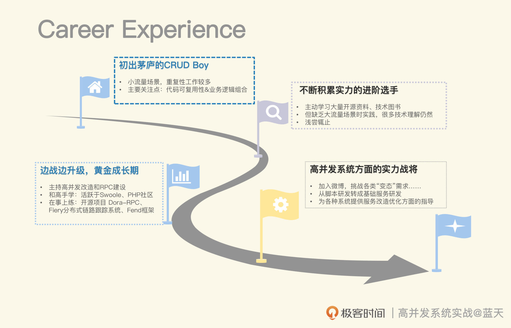
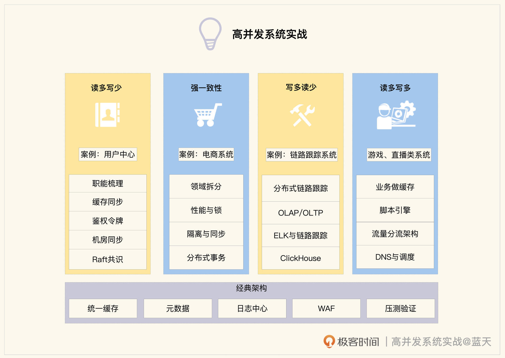

- 00 开篇词 高并发系统，技术实力的试金石.md
- 01 结构梳理：大并发下，你的数据库表可能成为性能隐患.md
- 02 缓存一致：读多写少时，如何解决数据更新缓存不同步？.md
- 03 Token：如何降低用户身份鉴权的流量压力？.md
- 04 同城双活：如何实现机房之间的数据同步？.md
- 05 共识Raft：如何保证多机房数据的一致性？.md
- 06 领域拆分：如何合理地拆分系统？.md
- 07 强一致锁：如何解决高并发下的库存争抢问题？.md
- 08 系统隔离：如何应对高并发流量冲击？.md
- 09 分布式事务：多服务的2PC、TCC都是怎么实现的？.md
- 10 稀疏索引：为什么高并发写不推荐关系数据库？.md
- 11 链路追踪：如何定制一个分布式链路跟踪系统 ？.md
- 12 引擎分片：Elasticsearch如何实现大数据检索？.md
- 13 实时统计：链路跟踪实时计算中的实用算法.md
- 14 跳数索引：后起新秀ClickHouse.md
- 15 实践方案：如何用C++自实现链路跟踪？.md
- 16 本地缓存：用本地缓存做服务会遇到哪些坑？.md
- 17 业务脚本：为什么说可编程订阅式缓存服务更有用？.md
- 18 流量拆分：如何通过架构设计缓解流量压力？.md
- 19 流量调度：DNS、全站加速及机房负载均衡.md
- 20 数据引擎：统一缓存数据平台.md
- 21 业务缓存：元数据服务如何实现？.md
- 22 存储成本：如何推算日志中心的实现成本？.md
- 23 网关编程：如何通过用户网关和缓存降低研发成本？.md
- 24 性能压测：压测不完善，效果减一半.md
- 答疑课堂 思考题答案（一）.md
- 结束语 为者常成，行者常至.md
00 开篇词 高并发系统，技术实力的试金石
你好，我是徐长龙，欢迎加入我的高并发实战课。
我目前在极客时间担任架构师一职，在此之前从事架构已有十几年，曾就职于穷游网、微博、好未来，主要做老系统的高并发迁移与改造，对RPC建设、服务化、框架、分布式链路跟踪监控以及Kubernetes管理平台拥有丰富的经验。
我个人对计算机技术有浓厚的兴趣，始终在主动学习各种技术，早年曾活跃在Swoole社区、PHP开发者大会。
作为一名一线技术老兵，回顾我这么多年职业生涯的发展关键节点，总是和“高并发系统改造”密切相关。
为什么大厂这么重视高并发？
说起高并发系统，你可能既熟悉又陌生。
熟悉是因为我们生活中常用的服务都属于高并发系统，比如淘宝、微博、美团、饿了么、12306、滴滴等等。
说它陌生，则是因为现实中只有少部分研发同学才能真正接触到这类系统，更多同学的刚需可能会局限于大厂面试。比如你是否也刷过这些问题：
1.为什么百万并发系统不能直接使用MySQL服务？- 2.为什么Redis内存相比磁盘，需要用更多的空间？- 3.怎么保证条件查询缓存的数据一致性？- 4.为什么高级语言不能直接做业务缓存服务？
那么大厂究竟关注的是什么呢？我们又该怎么看待高并发？
无论问题多么花哨，归根结底其实就一句话：大厂看重的是你解决问题的思路和方法，而支撑你去完美回应这些的是更深层次的系统设计方向和原理。
比如说，上面我们提到的为什么百万并发不能直接使用MySQL服务，没有足够积累的话，你回答的大概是因为太高的并发查询会导致MySQL缓慢，然后简单地讲讲如何用缓存抵挡流量。
但是如果你面的是更高级别的岗位，面试官想要的其实是让你讲讲MySQL数据库为什么不能提供这么大的并发服务，同时你需要深入一起讨论下分布式数据库索引、存储、数据分片、存算分离等相关知识。
我们知道，互联网服务的核心价值就是流量，流量越大，平台的可能性和空间就越大，所以这也是为什么大厂倾向于有高并发经验的研发。2014年后，互联网迈入高并发时代，大厂与创业公司之间的技术壁垒一直在不断加码，高并发相关人才从早几年的趋势已然成为如今的大厂标配。
近几年云服务厂商的基础建设越来越成熟，他们直接提供了无感的分布式服务支撑，这进一步减少了我们亲自动手实践的机会，这会导致很多架构师的工作只剩下选厂商、选服务、如何快速接入和如何节省成本。
所以我们需正视，高并发在大厂与小厂之间确实建起了一道墙，想跨越它，系统学习底层知识、实践高并发场景就是必经之路。
进阶高并发，最重要的是项目级实战
那具体怎么跨越？可以参考我的经历。
2007年我刚毕业那会儿，国内的技术环境还谈不上什么高并发，我的工作局限在小流量场景，最多就是想想代码的可复用性和业务逻辑的完整性，而市场上最不缺的就是我这个阶段的研发。被套牢在业务逻辑实现里的日子，我开始关注各种技术，但对开源和系统底层的认识还很浅薄，也不知道该怎么去加深这些知识。
直到我加入穷游网，实际主持老系统高并发改造工作，在RPC建设时，因为RPC性能瓶颈我碰了一鼻子灰，才真正发现了差距。
之前的一些技巧，不见得适用于更高要求的系统。小流量场景里无伤大雅的问题，系统规模变大后都可能被无限放大，这会给脆弱的系统造成“致命打击”。在高并发场景中，你会发现很多网上开源的自我介绍，跟实践验证的结果大相径庭。
这段经历，让我看问题的思路和视角有了一个很大的转变。为了弥补自己的不足，我阅读了大量计算机系统著作，恶补底层知识。在相关技术社区与同好激烈地讨论，在项目中我动手实测过大量的开源，也对他们提了很多改进issue建议。
总之，学习、实践、交流多管齐下，还是非常有成效的，很快我加入了微博广告部，从事基础架构方面的相关工作。
微博是我的一个黄金成长期，在这里体验了不少“有趣但变态的需求”，这里常常就给两台服务器。就要你去开发服务微博全网的业务，还要求你不能崩。期间我还参与建设了很多实用有趣的服务，这让我从三百多人的广告部脱颖而出，得到了珍贵的晋升机会。也是这段经历，让我真正转向基础服务研发，在数据服务和高并发服务方面积累了更多经验。
后来，我陆陆续续收到很多公司或朋友的邀请，为各种系统提供服务改造优化方面的指导。有的系统迁移改造好比蚂蚁搬家，断断续续花了两年多的时间；有的系统崩溃，公司损失达到千万元，叫我去救火；有的系统谁都拆不动，没有人说得清到底该怎么优化……

所以你清楚进阶路径了吗？学习、实践、交流会是最实用的方法，最终帮助你建立系统化的思维。
你可以先从手边的项目开始，比如对你所在企业的现有系统进行高并发改造，注意不要只阅读理论，而是要一边分析实践，一边用压测去验证。风险可控的话，推荐你可以先找一些无关紧要的小系统实践。
如何实践高并发？
那么具体如何改造呢？后面这四步最关键：识别系统类型、完善监控系统、梳理改造要点、小步改造验证。
以第一步为例，我们可以按照数据特征给系统归类，分别为读多写少、强一致性、写多读少、读多写多这四种类型。确定了系统的类型，就等同于确定了具体的优化方向。
而这个专栏就会针对这四个优化方向，带你梳理关键改造点。无论你需要构建高并发系统，还是面临业务流量增长或是系统改造升级，都能在这里找到参考。
这里我梳理了课程的知识结构图，下面结合图解说明一下课程的设计思路：

读多写少的系统
我会以占比最高的“读多写少”系统带你入门，梳理和改造用户中心项目。这类系统的优化工作会聚焦于如何通过缓存分担数据库查询压力，所以我们的学习重点就是做好缓存，包括但不限于数据梳理、做数据缓存、加缓存后保证数据一致性等等工作。
另外，为了帮你从单纯的业务实现思想中“跳出来”，我们还会一起拓展下主从同步延迟和多机房同步的相关知识，为后续学习分布式和强一致打好基础。
强一致性的电商系统
这一章我们会以最典型的电商系统为例，学习要求更高的强一致性系统。
这类系统的主要挑战是承接高并发流量的同时，还要做好系统隔离性、事务一致性以及库存高并发争抢不超卖。我会和你详细讨论拆分实践的要点，让你加深对系统隔离、同步降级和库存锁等相关内容的认识，弄明白分布式事务组件的运作规律。了解这些，你会更容易看透一些基础架构组件的设计初衷。
写多读少的系统如何做链路跟踪
接下来是高并发写系统，它涉及大量数据如何落盘、如何传输、存储、压缩，还有冷热数据的切换备份、索引查询等多方面问题，我会一一为你展开分析。我还会给你分享一个全量日志分布式链路跟踪系统的完整案例，帮你熟悉并发写场景落地的方方面面。
另外，行业内写高并发的服务通常需要借助一些开源才能实现，我还会介绍一些相关开源实现原理和应用方向，完善你的“兵器库”。
读多写多的直播系统
读多写多系统是最复杂的系统类型，就像最火热的游戏、直播服务都属于这个类型。其中很多技术都属于行业天花板级别，毕竟线上稍有点问题，都极其影响用户体验。
这类系统数据基本都是在内存中直接对外服务，同时服务都要拆成很小的单元，数据是周期落到磁盘或数据库，而不是实时更新到数据库。因此我们的学习重点是如何用内存数据做业务服务、系统无需重启热更新、脚本引擎集成、脚本与服务互动交换数据、直播场景高并发优化、一些关于网络优化CDN和DNS、知识以及业务流量调度、客户端本地缓存等相关知识。
第五章 内网建设案例讲解
最后一章，我精选了一些案例，也是我特别添加的，这里既有让人眼前一亮的项目方案，也有很多有趣实用的设计，主要目的是帮助你开拓视野，未来能自行实现一些基础服务设计。
对于流量刚成长起来的业务，这一章很有参考价值，能让你的系统在后续业务流量增长时，扛住需求冲击并能快速解决问题。同时，相信你对头部开源解决方案也会有更深的理解。
一起到达目的地之后，我希望你已经有了更加宏观的视野，通过多项目实践系统了解了高并发。在面临各类相关问题时，能针对不同类型的系统，实现更匹配业务需求和技术条件的改造优化。
高并发不会是区别大厂、小厂工程师的标准，却是检验技术实力的一道关。课程搭建的学习场景是个良好起点，为你创造机会提高能力，期待看到你未来的成长突破！
留言区和我聊聊你学习高并发的痛点吧，或许你遇到的困难已经在课程中有了答案，我也可以做针对性的加餐，我们一起交流学习。
© 2019 - 2023 Liangliang Lee. Powered by gin and hexo-theme-book.